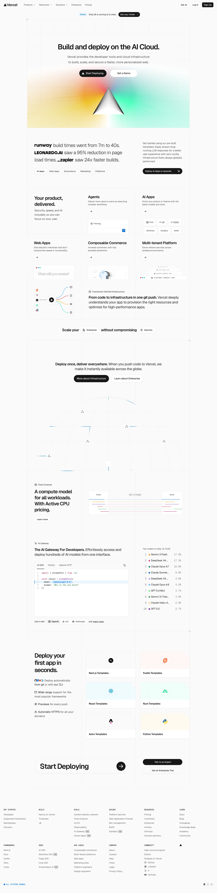

Vercel 主题
Vercel 的 Design.md 主题展示，围绕开发工具、媒体内容、SaaS 产品、浅色界面组织页面。
Frontend deployment. Black and white precision, Geist font.
开发工具媒体内容SaaS 产品浅色界面B2B 产品效率工具专业工具

来源
- 来源
- getdesign.md
- 镜像
- github:VoltAgent/awesome-design-md
- 网站
- https://vercel.com/
- 详情
- https://getdesign.md/vercel/design-md
色板
#171717: #171717#0070f3: #0070f3#4d4d4d: #4d4d4d#ffffff: #ffffff#888888: #888888#ebebeb: #ebebeb#a1a1a1: #a1a1a1#fafafa: #fafafa#f5f5f5: #f5f5f5#0761d1: #0761d1#d3e5ff: #d3e5ff#ee0000: #ee0000
字体
display: Geistbody: Intermono: Geist Monohints: Geist,Inter,Geist Mono,ui-monospace,SFMono-Regular,Menlo,Monaco,mono-kickers
圆角
control: 6pxcard: 8pxpreview: 0pxpill: 100pxsource: design-md
间距
xxs: 4pxxs: 8pxsm: 12pxmd: 16pxlg: 24pxxl: 32px2xl: 40px3xl: 48px4xl: 64px5xl: 96px6xl: 128pxsection: 192pxsource: design-md
使用建议
建议
- 建议：Reserve {colors.primary} ({#171717}) for primary CTAs across the page. Black ink IS the conversion target。
- 建议：Use {rounded.pill} 100 px for every marketing-scale CTA and {rounded.sm} 6 px for nav-scale buttons. The two pill scales coexist deliberately。
- 建议：Set every headline in {typography.display-*} weight 600, sentence-case, often period-terminated. Aggressive negative tracking is part of the voice。
- 建议：Use the brand mesh gradient as atmospheric decoration at hero scale only — never miniaturise it to an icon, never reduce to a single colour。
- 建议：Layer stacked shadows (multiple small offsets with inset hairline) rather than single heavy drops. The brand's elevation is calmer than Material。
避免
- 避免：introduce a sixth accent colour. The brand operates with ink + gray + the four-pair gradient palette; new accents flatten the voice。
- 避免：render headlines in all-caps. Sentence-case + negative tracking is non-negotiable。
- 避免：drop a single heavy drop-shadow on cards. The brand's elevation is built from stacked small offsets + inset hairline rings。
- 避免：render the brand gradient at icon scale or in a single-colour reduced form. The gradient lives at hero scale only。
- 避免：promote the geometric sans to weight 700. The brand's display ceiling is 600。
查看 DESIGN.md